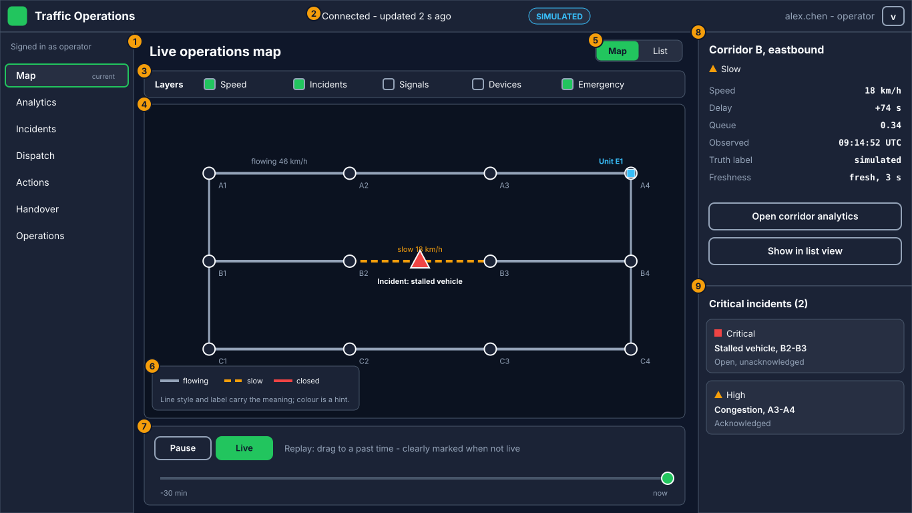
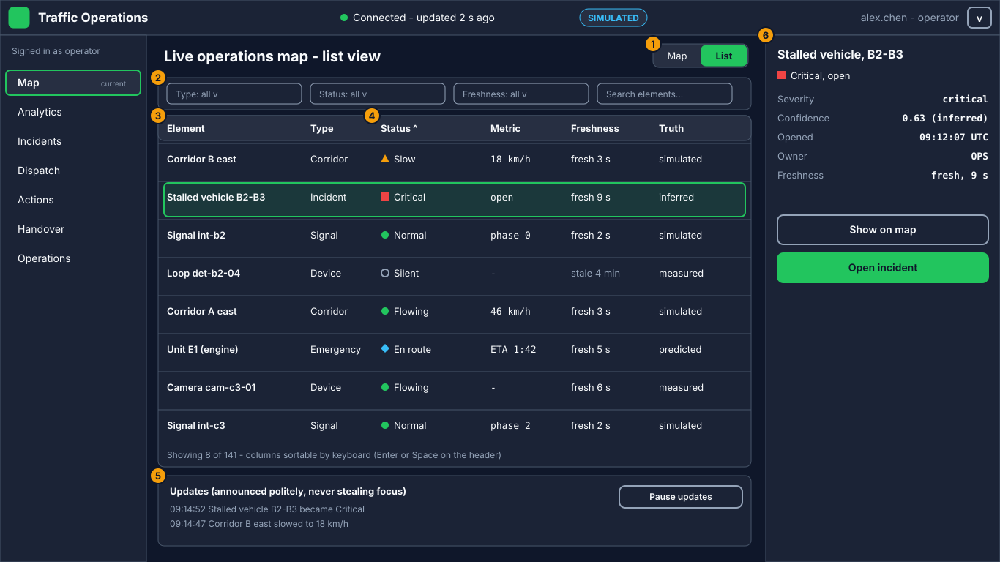
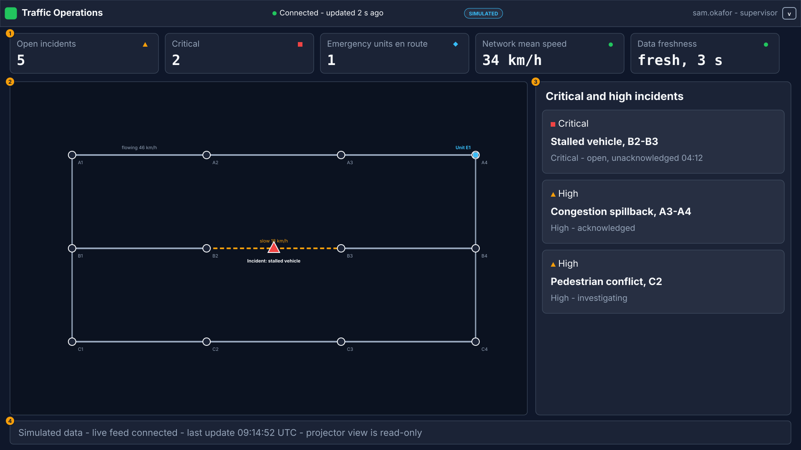
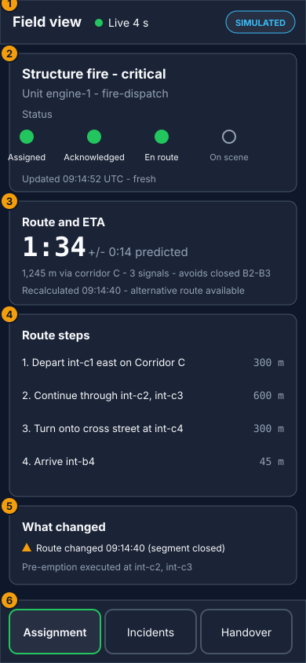
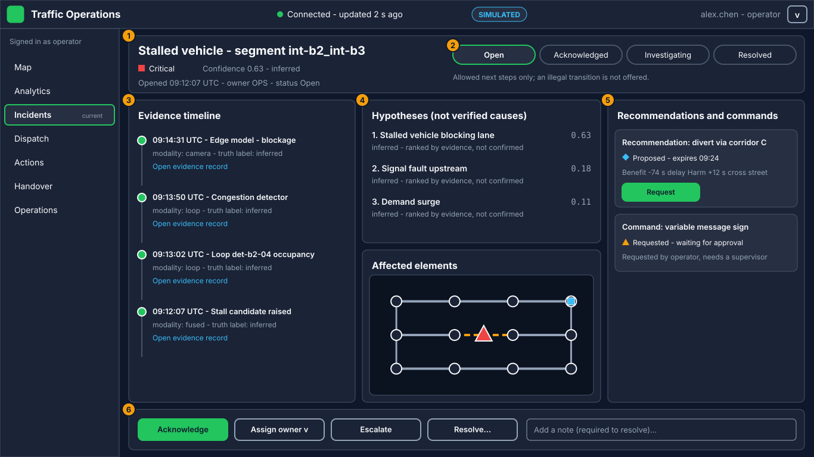
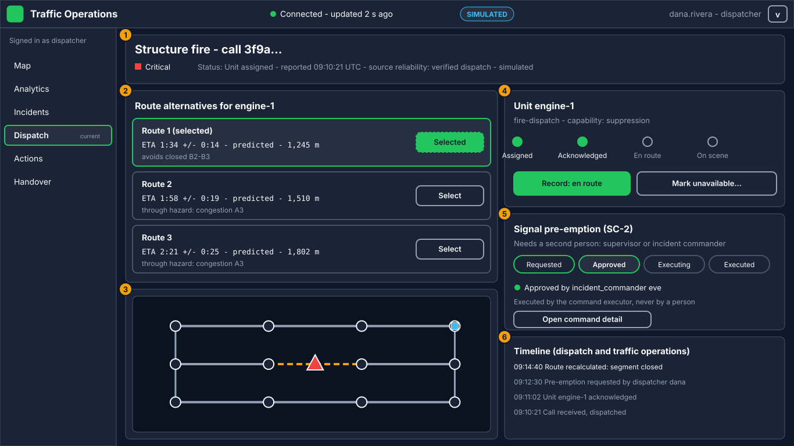
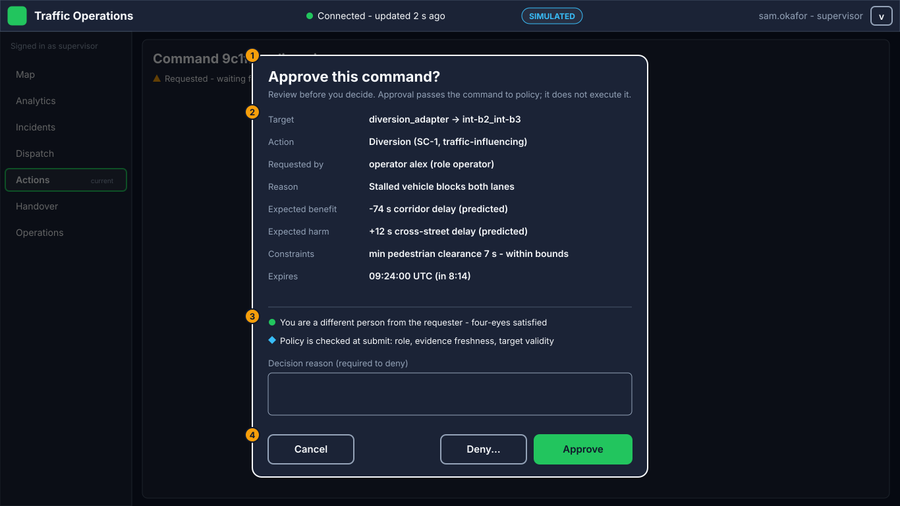

P08.02 wireframes
Editable SVG sources. Meaning of each numbered callout: docs/ux/WIREFRAMES.md.
Live operations map - laptop (1366x768)

Live operations map - accessible list alternative (1366x768)

Live operations map - projector (1920x1080)

Field view - mobile (390x844)

Incident investigation - laptop (1366x768)

Emergency dispatch detail - laptop (1366x768)

Command approval confirmation - laptop (1366x768)
